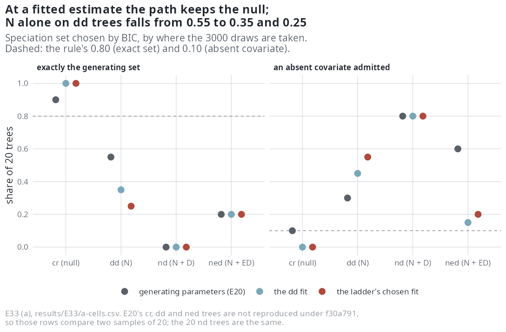
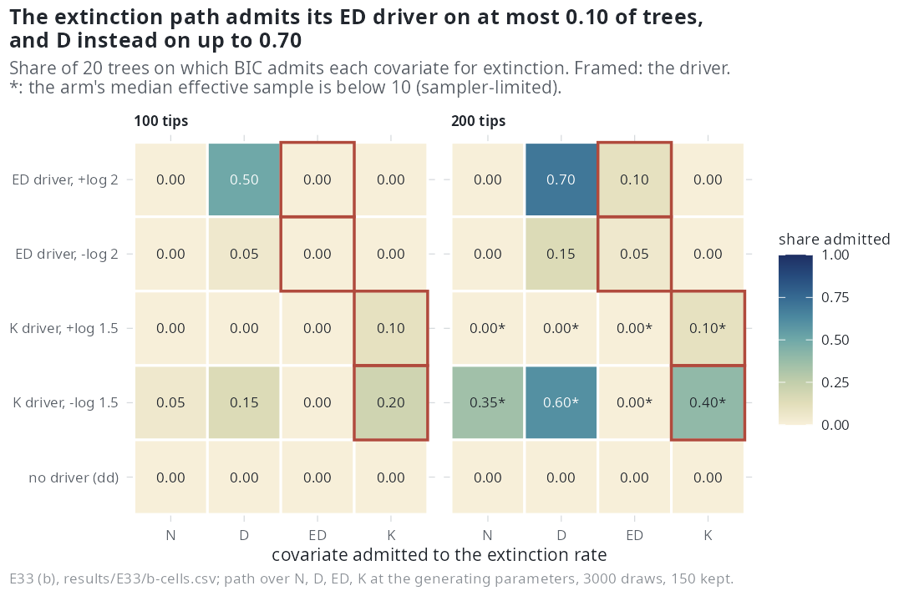

E33 — The path as a user runs it, and the extinction path with a driver
| Status | complete: (a) 160 paths in two arms, (b) 200 paths in ten arms |
| Package build | emphasis f30a791 |
| Driver / analysis | sim/E20-path.R (--at dd, --at chosen, --trees-dir), trees for (b) by sim/E27-conditions.R --trees-only; sim/E33-analysis.R → report/e33-numbers.tex, e33-table-a.tex, e33-table-b.tex |
| Data | results/E33/a-cells.csv (8 rows), results/E33/b-cells.csv (10 rows); per-arm folders a-dd/, a-chosen/, b-*, paths/ |
Question
Every dgLARS path measured so far (E20, E21b, E22) drew the hidden lineages at the generating parameters, which a user does not have; and every generator had extinction slopes of zero, so the extinction path had only been tested where there was nothing to admit. E33 asks two things: (a) does the path still choose the right set when the draws are taken at an MCEM estimate, as a user would run it — E20's second arm, which E20's rule had made conditional on a pass; (b) does the extinction path find a covariate that does drive extinction?
Design
(a) The path at a fitted estimate. E20's trees at 100 tips by seed (cr, dd, nd, ned, 20 each), the path over \(N\), \(D\), ED with 3000 draws and the 150 of largest weight as in E20, but the draws taken at an MCEM estimate of the tree:
| arm | draws taken at | MCEM fit |
|---|---|---|
dd |
the dd fit of the tree (--at dd) |
300 draws, 300 iterations, four-hour clock |
chosen |
the fit of the model the one-call ladder chooses (--at chosen) |
the same, per rung |
Under the f30a791 simulator E20's seeds reproduce its nd trees (20 of 20) and not its cr (1 of 20), dd or ned (0 of 20) trees, so the pairing with E20 holds tree by tree for nd only.
(b) The extinction path with a driver. Generators whose covariate acts on extinction only (speciation slope zero, --beta-eff 0), the intercept centred at the covariate's mean as in E32, capacity calibrated per arm:
| arm | generator | extinction slope | per unit at 100 / 200 tips |
|---|---|---|---|
| ED + / ED - | ned |
\(\gamma_{ED} = \pm\log 2\) per mean ED | ±0.1446 / ±0.1807 |
| K + / K - | nk |
\(\gamma_K = \pm\log 1.5\) per sd of \(K\) | ±0.1525 / ±0.1471 |
| null | E27's dd trees of the same cells |
0 | — |
At 100 tips (E27's ref cell) and 200 tips (n200), 20 trees an arm; the path over \(N\), \(D\), ED and \(K\) for both rates at the generating parameters, 3000 draws, 150 kept. Proposal: surrogate for the ED and null arms, thinning for the \(K\) arms.
Pre-set rule
(a) (1) E20's rule per arm: the generating set on \(\ge 0.80\) of cr and dd trees, an absent covariate admitted on \(\le 0.10\). (2) Paired with E20 on the same trees: the share with the same set as at the generating parameters; usable as a route if \(\ge 0.80\) on cr and dd trees and the false-admission rate within 0.05 of E20's. (3) In the chosen arm, the share on which the path's set and the ladder's model name the same covariates. (4) The path's median ESS per arm and generator beside E20's; a cell below 10 is sampler-limited and reported, not read.
(b) (1) Detected: the driver in the extinction set BIC chooses on \(\ge 0.80\) of trees in both signed arms. (2) Specific: on the zero arms the extinction path admits any covariate on \(\le 0.10\), and in the signed arms a non-driver on \(\le 0.10\). (3) Recovered: right sign on \(\ge 80\%\) and median 0.75 to 1.25 of the generating value. (4) The speciation path on these trees read by E20's rule (\(N\) alone, absent lineage-level covariates on \(\le 0.10\)). (5) An arm with median ESS below 10 of 3000 is sampler-limited; an arm whose generator misses its size by more than 15% is reported and not fitted.
Results
(a) (E20's value at the generating parameters in parentheses):
| arm | generator | exact set | absent covariate admitted | same tree / same set | path = ladder's model | ladder names generator | path ESS | MCEM fits finished / 20 | median hours per fit |
|---|---|---|---|---|---|---|---|---|---|
dd fit |
cr | 1.00 (0.90) | 0.00 (0.10) | 1 / 1 | — | — | 726 (3000) | 17 | 0.12 |
dd fit |
dd | 0.35 (0.55) | 0.45 (0.30) | 0 / 0 | — | — | 1893 (2424) | 19 | 0.11 |
dd fit |
nd | 0.00 (0.00) | 0.80 (0.80) | 20 / 12 | — | — | 1507 (24) | 16 | 0.12 |
dd fit |
ned | 0.20 (0.20) | 0.15 (0.60) | 0 / 0 | — | — | 1293 (5) | 17 | 0.14 |
| chosen fit | cr | 1.00 (0.90) | 0.00 (0.10) | 1 / 1 | 0.90 | 0.90 | 3000 (3000) | 20 | 8.8 |
| chosen fit | dd | 0.25 (0.55) | 0.55 (0.30) | 0 / 0 | 0.40 | 0.85 | 2666 (2424) | 19 | 9.6 |
| chosen fit | nd | 0.00 (0.00) | 0.80 (0.80) | 20 / 16 | 0.15 | 0.10 | 2700 (24) | 17 | 5.7 |
| chosen fit | ned | 0.20 (0.20) | 0.20 (0.60) | 0 / 0 | 0.45 | 0.05 | 2752 (5) | 19 | 6.8 |
"Hours per fit" in the chosen arm is the ladder's (hours_fit). No cell is sampler-limited. The generator-specific ESS is far larger at a fitted estimate than at the generating parameters for nd and ned (1507-2752 against 24 and 5), because the dd estimate carries no ED brake.

cr trees holds (1.00); \(N\) alone on dd trees falls from 0.55 to 0.35 and 0.25, with false admissions rising from 0.30 to 0.45 and 0.55; nd is never returned.(b) Shares of 20 trees:
| arm | tips | driver admitted to extinction | extinction admits \(N\) / \(D\) / ED / \(K\) | ratio (trees kept, right sign) | speciation: \(N\) alone / absent lineage covariate | ESS | fits < 10 |
|---|---|---|---|---|---|---|---|
| ED +log 2 | 100 | 0.00 | 0 / 0.50 / 0 / 0 | — | 0.35 / 0.40 | 454 | 0 |
| ED +log 2 | 200 | 0.10 | 0 / 0.70 / 0.10 / 0 | 1.36 (2, 2) | 0.65 / 0.30 | 99 | 1 |
| ED -log 2 | 100 | 0.00 | 0 / 0.05 / 0 / 0 | — | 0.40 / 0.45 | 728 | 0 |
| ED -log 2 | 200 | 0.05 | 0 / 0.15 / 0.05 / 0 | 1.33 (1, 1) | 0.65 / 0.30 | 250 | 0 |
| K +log 1.5 | 100 | 0.10 | 0 / 0 / 0 / 0.10 | 0.60 (2, 2) | 0.35 / 0.50 | 22 | 5 |
| K +log 1.5 | 200 | 0.10 | 0 / 0 / 0 / 0.10 | 0.51 (2, 2) | 0.50 / 0.45 | 6.0 (s-l) | 15 |
| K -log 1.5 | 100 | 0.20 | 0.05 / 0.15 / 0 / 0.20 | 0.79 (4, 4) | 0.50 / 0.35 | 11 | 8 |
| K -log 1.5 | 200 | 0.40 | 0.35 / 0.60 / 0 / 0.40 | 0.66 (8, 8) | 0.60 / 0.30 | 2.9 (s-l) | 20 |
| null | 100 | — | 0 / 0 / 0 / 0 | — | 0.40 / 0.30 | 2254 | 0 |
| null | 200 | — | 0 / 0 / 0 / 0 | — | 0.75 / 0.15 | 2505 | 0 |

Conclusion
(a) Not usable as a route by its rule (both arms, verbatim from e33-numbers.tex: "E20's rule on cr and dd: not met; same set as at the generating parameters on 1 of 1 and 0 of 0 of the same trees: not usable by the rule"). Rule (2) is degenerate on cr and dd here, with 1 and 0 trees identical to E20's, so the verdict rests on rule (1): at a fitted estimate the path keeps the null (1.00 on cr) and loses diversity dependence (dd exact 0.35 and 0.25, absent covariate admitted on 0.45-0.55). On nd trees, where the trees are E20's own, the set equals E20's on 12 and 16 of 20, and nd is never returned. The path agrees with the ladder's model on 0.90 (cr), 0.40, 0.15, 0.45, and the ladder itself names the generator on 0.90, 0.85, 0.10, 0.05.
(b) Not detected. By e33-numbers.tex: ED "not detected, not specific" at 100 and 200 tips; \(K\) "not detected, not specific" at 100 tips and sampler-limited at 200. With extinction driven by ED the path admits ED on at most 0.10 of trees and \(D\) instead on 0.50-0.70 in the positive arm: it reads the pendant edge as raw age rather than as distinctiveness, and only where extinction rises with it. Nothing is admitted to extinction on null trees. The \(K\) driver is admitted on 0.10-0.20 at 100 tips; the 200-tip \(K\) arms rest on 6 and 3 effective draws. A fact the supplement does not state as a verdict: the speciation path on these trees keeps \(N\) alone on only 0.35-0.75 and admits an absent lineage-level covariate on 0.15-0.50, above E20's 0.10 ceiling, at the generating parameters (rule 4 not met).
Related
- E20 — the path at the generating parameters, whose second arm this is.
- E22 — the same path at 50-400 tips.
- E23, E27 — the one-call ladder whose chosen fit the
chosenarm draws at; E27'sddtrees are (b)'s null. - E32 — the extinction side by fitting at 200 tips, whose generators (b) borrows.
- E34 — the conditional likelihood; every result up to E33 is unconditional.